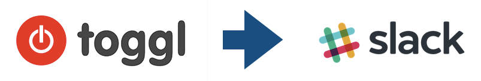

鉄は熱いうちに打て
=============================
TogglとSlackを連携したいと思った経緯¶
2017-12-14
仕事がんばっていますか？
私はすぐに気が散ってしまい、全然作業が進みません。どこかの塾のキャッチフレーズとかに やりはじめないと、やる気は出ません。 とかありましたが、やり始めるのが億劫で、ぼーっとしているとすぐに１時間位過ぎてしまいます。
そこで、業務改善の本を読みまくりました。
業務改善の本じゃないですが、ホモドーロテクニックが紹介されていました。まぁ、集中しろとおっしゃってます。

筆者、朝の４時頃起きて仕事するとか、社畜魂丸出しな感じの本ですが、午前中に仕事の殆どを集中してやる。あたりはぐっと来ました。 英語を話せる方法は英語しか話せない人とデートすることだそうです。既婚者はどうすればいいんだ！！

ホモドーロテクニックだ！と勢いで、ポモドーロタイマー的なアプリなどを入れてやってみたのですが、私の仕事的にずーとコーディングするということもなく、とぎれとぎれに５分で終わる仕事をしたり、１，２時間かかる仕事をしたりするので、２５分は結構切りが悪かった。
紆余曲折でいきついたのが Toggl でした。
やったことを記録しておくツールです。止め忘れとかを教えてくれます。有名なので、詳細は省きます。
けっこう、毎日同じ仕事をしているので、一度タイトルを書けばON, OFFを押すだけでとても便利です。ブラウザの拡張プラグインを使えば色々なサービスと連携できます。私は主にGitHubとasanaと連携して使っています。
それから半年ほど経ったある日、会社のチーム全体でTogglを利用しようということになりました。
私のチームはみんないろいろな仕事を細切れでやっているので、報告がめんどくさい→Togglを使って記録して、それをメンバーに見せればいいじゃない。となりました。
それなら、仕事を開始したら、チームのSlackにメンションしたいなと思うようになりました。そんなわけで、TogglからSlackに作業を開始したら書き込むスクリプトを書きましたの話をしようと思ってたんですが、長くなってきたので、また明日！
/pages/2017/2017-12-15-article.html